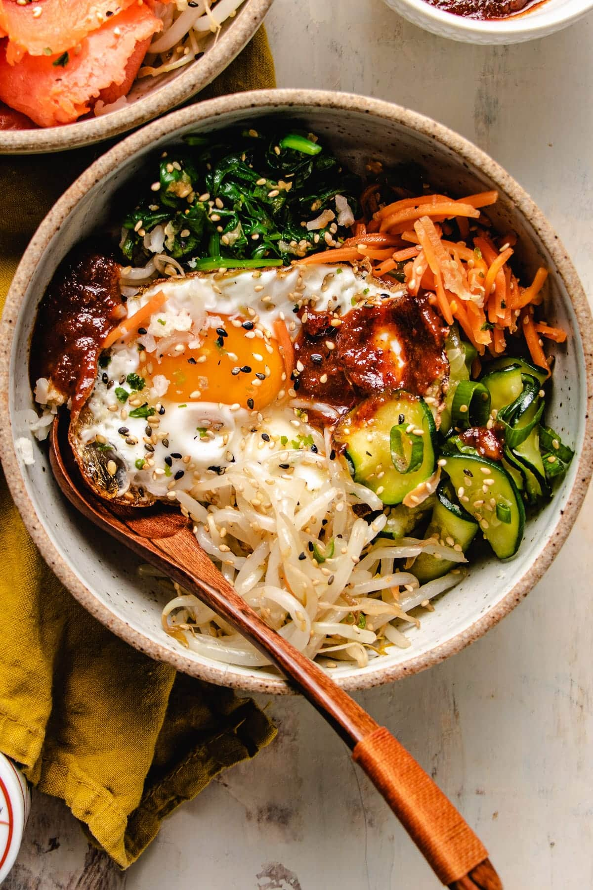

Bibimbap
Home

Since the first time I had this in Seoul, South Korea, I have Bibimbap!
I especially love how easy it is to make, and how you can really customize it to whatever ingredients you have at home.
Ingredients
- Steamed rice
- Eggs
- Carrots
- Sausage
- Zuccini
- Bean sprouts
- Mushrooms
- Cooking oil
- Gochujang
- Sesame oil
- Other sauces of choice
Instructions
- Prepare the steamed rice.
- Using sauces of choice, prepare the vegetables.
- With some cooking oil, sauté the vegetables and sausage.
- Lightly fry the eggs.
- Assemble the bowl, with a base of rice, and top with an egg.
- Drizzle with Gochujang sauce.
- To eat, break the egg yolk and mix the components together.